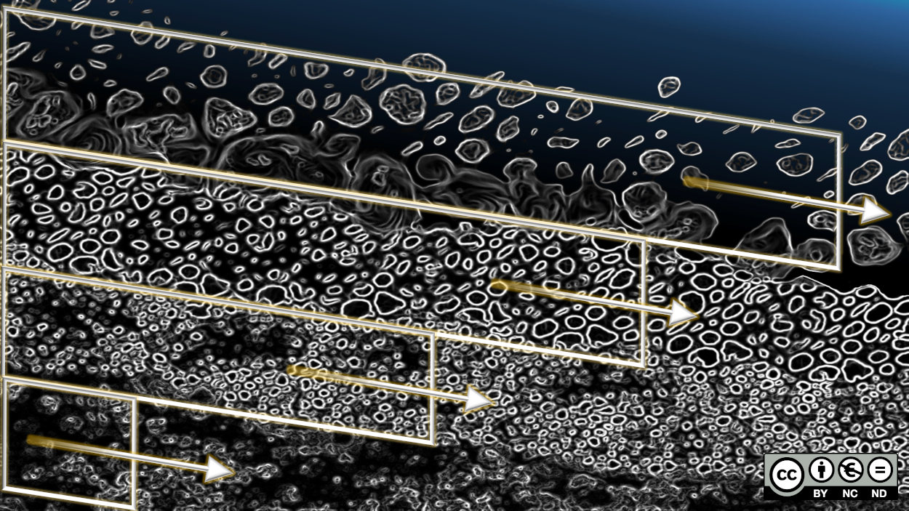

Basic Setup of Gaia#
The following instructions refer to the setup of the above-created Gaia steering file (gaia-morphodynamics.cas), which needs some mandatory parameters and enables many more optional keywords settings. An overview of available keywords can be found in the Gaia reference manual and the Gaia dictionary file /telemac/v9.0.0/sources/gaia/gaia.dico. Similar to the Telemac2d or Telemac3d hydrodynamics steering file, the Gaia steering file can be distinguished between keyword groups for general (file-related), physical (sediment transport), and numerical parameters. This section introduces general parameters embracing the setup of boundary condition files and basic definitions of sediment and riverbed characteristics. The implementation of Bedload and/or Suspended load is covered in separate sections.
General Parameters#
The general parameters defining mandatory input and output files resemble those of the hydrodynamic steering file. The input files can even be the same used in the hydrodynamics steering file. For instance, define the qgismesh.slf from the pre-processing as geometry file. In addition, add boundaries-gaia.cli as BOUNDARY CONDITIONS FILE, which will be explained in the section on boundary conditions for Gaia. The Gaia RESULTS FILE keyword should also differ from the RESULTS FILE keyword in the hydrodynamic steering file.
/ gaia-morphodynamics.cas
/
/ COMPUTATION ENVIRONMENT
/
GEOMETRY FILE : qgismesh.slf
BOUNDARY CONDITIONS FILE : boundaries-gaia.cli
RESULTS FILE : rGaia-steady2d.slf
MASS-BALANCE : YES
Graphical output variables related to sediment transport can be defined with the VARIABLES FOR GRAPHIC PRINTOUTS keyword for Bedload and/or Suspended load and the following list-options:
Bfor bottom elevation in (m a.s.l.)Efor bottom evolution in (m)Ffor Froude number (-)Mfor the magnitude (length) of the bi-directional (i.e., \(x\) and \(y\) directions) unit sediment transport \(\boldsymbol{q_s}\) (read more in the definition of the Exner equation) in (kg\(\cdot\)m\(^{-1}\cdot\)s\(^{-1}\))MUfor the skin friction coefficient (as a function of skin friction correction factors described in the section on bedload)Nfor unit bedload transport in \(x\)-direction \(\boldsymbol{q_b}\cdot\cos\alpha\) in (kg\(\cdot\)m\(^{-1}\cdot\)s\(^{-1}\)) where \(\alpha\) is the angle between the longitudinal channel (\(x\)) axis and the solid transport vector \(\boldsymbol{q_b}\).Pfor unit bedload transport in \(y\)-direction \(\boldsymbol{q_b}\cdot\sin\alpha\) in (kg\(\cdot\)m\(^{-1}\cdot\)s\(^{-1}\))QSBLfor the magnitude (length) of the bi-directional (i.e., \(x\) and \(y\) directions) unit bedload (only) transport \(\boldsymbol{q_b}\) in (kg\(\cdot\)m\(^{-1}\cdot\)s\(^{-1}\))Rfor the non-erodible bottom (m a.s.l.)Sfor water surface elevation in (m a.s.l.)TOBfor bed shear stress in (N\(\cdot\)m\(^{-2}\))
The parameters M and QSBL will result in the same output if no suspended load is simulated. To output multiple parameters, set the VARIABLES FOR GRAPHIC PRINTOUTS keyword for this tutorial as follows:
/ continued: gaia-morphodynamics.cas
/ ...
VARIABLES FOR GRAPHIC PRINTOUTS : B,E,M,MU,N,P,QSBL,TOB
Boundary Conditions#
The boundary conditions in Gaia work similarly to the hydrodynamics and can be derived from the hydrodynamics boundaries.cli file.
Boundary conditions file structure and mass balance
Recall the structure of the hydrodynamics boundaries.cli file, which has 13 values (i.e., columns) per line (row), which are separated with a space and this is how the file head looks like (for closed wall 2-type boundaries):
2 2 2 0.000 0.000 0.000 0.000 2 0.000 0.000 0.000 138 1 #
2 2 2 0.000 0.000 0.000 0.000 2 0.000 0.000 0.000 9836 2 #
2 2 2 0.000 0.000 0.000 0.000 2 0.000 0.000 0.000 9838 3 #
2 2 2 0.000 0.000 0.000 0.000 2 0.000 0.000 0.000 9194 4 #
2 2 2 0.000 0.000 0.000 0.000 2 0.000 0.000 0.000 9827 5 #
2 2 2 0.000 0.000 0.000 0.000 2 0.000 0.000 0.000 9828 6 #
...
The columns (1) to (7) are the same as those in the hydrodynamics boundaries.cli file and the column/value meanings are:
(1)
LIHBOR: boundary code for the flow depth(2)
LIUBOR: boundary code for the \(u\) velocity component(3)
LIVBOR: boundary code for the \(v\) velocity component(4)
HBOR: flow depth value (in m) -not used in this tutorial(5)
UBOR: \(u\) velocity (m\(\cdot\)s\(^{-1}\)) -not used in this tutorial(6)
VBOR: \(v\) velocity (m\(\cdot\)s\(^{-1}\)) -not used in this tutorial(7)
AUBOR: friction coefficient -not used in this tutorial(8)
LIEBOR: Gaia-specific boundary code for the riverbed evolution (or concentration for cohesive sediment)(9)
Q2BOR: Gaia-specific solid discharge (used for bedload, in kg\(\cdot\)m\(^{-1}\cdot\)s\(^{-1}\)) or near-bed sediment concentration (in g\(\cdot\)L\(^{-1}\)) in case of suspended load (or cohesive sediment)(10)
EBOR: Gaia-specific riverbed elevation (m a.s.l.)(11)
CBOR: Gaia-specific equilibrium suspended sediment concentration (in g\(\cdot\)L\(^{-1}\)) for suspended load modeling (read more in the section on suspended load)(12) Point number
(13) Boundary point order number
The structure of the boundary conditions file varies between Telemac2d-coupled and Telemac3d-coupled Gaia models. Thus, when moving from 2d to 3d models, create new boundary condition files.
The Gaia-specific boundary type (column 8: LIEBOR) of the Gaia boundaries condition can be defined with the following integer values:
1defines incident wave or Thompson boundaries2defines wall boundaries4defines free (Neumann) boundaries5defines an imposed value (Dirichlet) boundary
Similar to the hydrodynamics, solid (sediment) discharges (Dirichlet condition: LIEBOR=5) can either be defined directly in the boundaries file (i.e., with the Q2BOR columns 9), through the keywords PRESCRIBED SOLID DISCHARGES or CLASSES IMPOSED SOLID DISCHARGES DISTRIBUTION, or as time-series in a liquid boundaries file. The sediment (bedload or suspended load) will adapt to Neumann-type outflow (i.e., LIEBOR=4) or equilibrium inflow boundaries. The below box provides more details and for more guidance go to sections 2.3 and 3.1.10-3.1.12 in the Gaia manual.
For this tutorial, start with creating a copy of the hydrodynamics boundaries.cli file, name it boundaries-gaia.cli and replace column (8) (i.e., all LIHBOR occurrences) with the following values:
Closed wall boundaries (formerly
LIHBOR=2):LIEBOR=2Open outflow boundaries (formerly
LIHBOR=4):LIEBOR=4Open inflow boundaries (formerly
LIHBOR=5):LIEBOR=5and set equilibrium inflow in the steering file (see below)
Both the mass of the solid discharge through open boundaries and the bed evolution within the model domain should be coherent. When the model boundaries have a static bed, they may cause mass balance errors. An appropriate approach for prescribing a dynamic bed with mass-conserving morphodynamics is to prescribe an equilibrium bed at the inflow boundary. If the inflow boundary is in an area where erosion can be expected, it is important to have more riverbed erodibility. Thus, in this tutorial, the inflow boundary is implemented with the equilibrium condition through the steering file (see below), and the outflow boundary with Neumann-type (i.e., LIEBOR=4).
To define equilibrium solid (bedload) discharge and suspended sediment concentration at inflow boundaries, add the following to the Gaia steering file:
/ gaia-morphodynamics.cas
/
/ BOUNDARY CONDITIONS
EQUILIBRIUM INFLOW CONCENTRATION : YES / use an equilibrium approach at inflow nodes
The EQUILIBRIUM INFLOW CONCENTRATION keyword corresponds to the hydrodynamics TREATMENT OF FLUXES AT THE BOUNDARIES keyword and it computes the near-bed suspended sediment concentration with empirical formulae (read more in the section on suspended load).
Neumann vs. Dirichlet sediment inflow boundaries
If the model contains clearly defined sediment sources, with known sediment amounts, Dirichlet-type (imposed value) sediment inflow boundary conditions are preferable. For instance, if a watershed soil loss model such as the Revised Universal Soil Loss Equation (RUSLE) [Ren97] is available, sediment supply with fine (cohesive) sediment can be more precisely defined. In contrast, if sediment input and transport are driven by the bulk flow, equilibrium boundaries may be more appropriate.
Sediment Classes#
The sediment classes used for Gaia are defined through the steering file and represent initial values. During a simulation, erosion, transport, and deposition change the spatial and temporal sediment class distribution within the model’s computational mesh. This section introduces the basic sediment class setup to define one or more particle size classes with specific characteristics, such as sediment density. The later sections on bedload and suspended load go beyond these basic definitions and explain how to define bedload transport equations or suspended sediment concentrations.
Gaia distinguishes between non-cohesive and cohesive sediments through the CLASSES TYPE OF SEDIMENT keyword, where the following values apply:
NCOdefines non-cohesive sedimentCOdefines cohesive sediment
Multiple sediment types can be assigned, separated by a semicolon (;). To keep the tutorial simple, only non-cohesive sediment is used (the implementation of cohesive sediment is similar though):
/ continued: gaia-morphodynamics.cas
/
/ ...
/ SEDIMENT
CLASSES TYPE OF SEDIMENT : NCO;NCO;NCO
Cohesive sediment
For cohesive sediment, additional parameters can be defined, such as:
MUD CONCENTRATION PER LAYER defines the mass concentrations in each layer (up to 20) for the consolidation model in (\(g\cdot L^{-1}\)).
LAYERS PARTHENIADES CONSTANT defines erosion fluxes in (kg\(\cdot\)m\(^{-2}\cdot\)s\(^{-1}\)) for each layer (up to 20 layers).
LAYERS CRITICAL EROSION SHEAR STRESS OF THE MUD defines the critical erosion shear stress in (N\(\cdot\)m\(^{-2}\)) for each layer (up to 20 layers).
LAYERS MUD CONCENTRATION defines the mass concentrations in (g\(\cdot\)L\(^{-1}\)) for each layer (up to 20 layers) of the consolidation model.
Many more are listed in Gaia reference manual.
The number of values assigned to the subsequent keywords must correspond to the above-defined number (here: three) of sediment classes. Other mandatory sediment characteristics refer to the grain size (CLASSES SEDIMENT DIAMETERS in meters) and the density (CLASSES SEDIMENT DENSITY in kg\(\cdot\)m\(^{-3}\)) of a sediment class. To define gravel, cobble, and sand classes, update the steering file as follows:
/ continued: gaia-morphodynamics.cas
/
/ ...
/ SEDIMENT
CLASSES TYPE OF SEDIMENT : NCO;NCO;NCO
CLASSES SEDIMENT DIAMETERS : 0.05;0.1;0.0005
CLASSES SEDIMENT DENSITY : 2680;2680;2680
This tutorial uses three grain size classes and the sediment density is here assumed to be the same for all three classes. In the real world, heavier particles (higher density) tend to be coarser and are less likely to travel far downstream in a given river. This phenomenon should be kept in mind when assuming a characteristic sediment density.
In graded sediment, an initial fraction of the bed material is assigned to every particle size class with the CLASSES INITIAL FRACTION keyword. The sum of all class fractions must be equal to one. The fraction can be estimated from sieving curves, for example, by determining the percent that each sediment class constitutes of the \(D_{84}\) particle diameter. In this tutorial, the sediment classes have the following initial fractions:
/ continued: gaia-morphodynamics.cas
/
/ ...
CLASSES INITIAL FRACTION : 0.45;0.45;0.1
The particle size classes can also be assigned specific Shields parameter values (CLASSES CRITICAL SHEAR STRESS) or settling velocities (CLASSES SETTLING VELOCITIES), for example, to impose no-erosion or no-deposition conditions. Note that the SISYPHE keyword NUMBER OF SIZE-CLASSES OF BED MATERIAL is obsolete in Gaia.
Particular sediment transport formulae for simulating Bedload or Suspended load are related to the phenomena under consideration and their implementation in the Gaia steering file is explained in the next sections.
Zonal sediment size and fraction definitions
Sediment size classes can be declared for particular zones of a model, similar to friction zones (recall the friction zone box at the bottom of the section on friction boundaries). Thus, a Selafin (*.slf) file containing riverbed characteristics can be declared with the geometry in the Gaia steering file. An example for zonal sediment definitions is provided with the Wilcock-Crowe model in the TELEMAC installation (e.g., /telemac/v9.0.0/examples/gaia/wilcock_crowe-t2d/ - have a look at gai_ref_WC2003.slf in BlueKenue).
Active Layer#
The boundary conditions of a model define sediment supply (inflow) and outflow rates, which may stem from gauging stations, measurements, or watershed soil loss models, such as the Revised Universal Soil Loss Equation (RUSLE) [Ren97]. Sediment that just passes through the model and merely settles from time to time before being mobilized again (by Einstein [Ein50]s theory) is referred to as wash load or traveling bedload [PR17]. However, sediment can also be recruited (eroded) from the riverbed or deposited on the riverbed within the model boundaries. To tell a morphodynamic model to what depths it can erode (e.g., because bedrock or concrete is present below), an active layer can be defined. In addition, multiple bed layers can be defined below the active layer, for example, to implement sediment stratification in the riverbed with respect to grain sizes. Grain size stratification plays a role especially when the riverbed is armored, which means that the uppermost sediment layer is significantly coarser than deeper sediment layers [Hir71]. Figure 190 qualitatively illustrates this concept, where the uppermost layer is the active layer (also referred to as the mixing layer in Gaia) and the lower sublayers constitute the substratum of the riverbed.

Fig. 190 Qualitative illustration of the active layer (mixing layer) and the substratum layers of the riverbed. The active layer is at the surface, in direct contact with the water column (Figure conceptually adapted from Du Boys [DB79] and Church and Haschenburger [CH17]).#
The active layer concept was initially introduced by Du Boys [DB79] as a sequence of layers of the riverbed, which are moving at different speeds (the deeper the layer, the slower). Du Boys [DB79] described that the thickness of every layer was equal to the diameter of representative grain size and that the active bed (i.e., the sum of all moving layers) can be up to 10 times the representative grain size (i.e., approximately 10 grain diameters) [FC11, RBKR13]. Hirano [Hir71] picked up on this concept and characterized the active layer as an exchange layer with a thickness of multiple times the \(D_{50}\), between an immobile sublayer and a fully mobile layer in the bulk flow along the riverbed. Several processes (e.g., hydraulic shear, grain collision, or sorting) dominate within the exchange layer and the thickness of the exchange layer has been defined differently by several authors. One reason for the different definitions of the active layer thickness is that it also depends on the proportion of fine sediment contents. The difference between coarse and fine sediment is that fine sediment might build up bedforms such as ripples or dunes. Thus, in the presence of fine sediments, such as sand (diameter smaller than 1-2 mm), only models accounting for bedforms in the active layer can reproduce bed aggradation or degradation and grain sorting effects [Blo08]. However, a model considering bedforms composed of fine sediments describes the active layer as a function of (0.5 times) the height of dunes (i.e., mega ripples) [Kle05], which contrasts with the definition of the active layer thickness as a multiple of a grain diameter (e.g., 3\(\cdot D_{50}\)). Thus, there are two competing parametric and conceptual definitions of the active layer, which is why Church and Haschenburger [CH17] propose the following terminology that is adapted in this eBook:
The active layer describes the immediately mobile riverbed where real-time, dynamic particle displacement happens. Its thickness is a multiple of the characteristic grain diameter.
The disturbance layer encompasses sand wave progression in the form of scour and fill on an event scale. Its thickness is 0.5 times the dune (or ripple) height.
Though Gaia accepts only an ACTIVE LAYER THICKNESS keyword, it may refer to the active layer as a multiple of the representative grain size, or when fine sediment is present (\(\geq\) 20%), to the disturbance layer with a thickness of 0.5 times the dune height. When the riverbed is composed of cobble and gravel with a small share of fine sediment (approximately between 1% and 20%), the active layer thickness should be generously assumed with a multiple (2-3 times) of the cobble size.
Gaia’s active layer terminology
In Gaia, the terms active layer and mixing layer are synonymous: both refer to the uppermost sediment layer that is in direct contact with the water column. This layer supplies material that can be transported as bedload or suspended load, and it receives deposited sediment. The layers below the active layer are called the substratum.
The thickness of the active layer is a user-defined target value in Gaia (default: 10,000 m, which effectively mixes the entire bed). The active layer is automatically created at the surface of the sediment bed at the beginning of a simulation when more than one sediment class is defined. During the simulation, Gaia maintains the target active layer thickness through exchanges with the substratum:
During erosion: Sediment mass is removed from the active layer for bedload transport or suspension. To maintain the target thickness, Gaia transfers mass from the substratum (the first non-empty layer below the active layer) into the active layer. The transferred material has the composition of the substratum, which may change the active layer’s composition over time.
During deposition: Sediment mass is added to the active layer. To maintain the target thickness, Gaia transfers excess mass from the active layer to the substratum. The transferred material has the composition of the active layer.
If the available sediment thickness is less than the target active layer thickness at any node, the actual active layer thickness equals the available sediment. This behavior implements Gaia’s rigid bed (non-erodible bottom) algorithm, where erosion cannot exceed the available sediment mass in the active layer during any time step.
The riverbed can be stratified into several sublayers (cf. Fig. 190) by defining the NUMBER OF LAYERS FOR INITIAL STRATIFICATION keyword (integer, default: 1). Gaia then vertically divides the riverbed into the number of user-defined layers plus one, where the plus-one layer corresponds to the active layer that is added at the top. The thickness of the initial riverbed layers can be defined with the LAYERS INITIAL THICKNESS keyword (default: 100 m). If the ACTIVE LAYER THICKNESS is larger than the first layer of the initial stratification, Gaia merges the first layer into the active layer and takes additional sediment from deeper layers as needed to reach the target thickness. The initial composition of the active layer then becomes a mix of sediment from these merged layers.
What happens when Gaia deposits sediment?
Sediment deposition at a grid node adds mass to the active layer. Because Gaia maintains the target active layer thickness, an equivalent portion of sediment is transferred from the active layer to the substratum (the first layer below). This flux has the composition of the active layer, so deposition changes the composition of the substratum while the active layer’s composition changes according to what was deposited.
In this tutorial, a sand, gravel, and cobble sediment mix is used with an ACTIVE LAYER THICKNESS of 3 \(\cdot D_{90}\) (of cobble). The riverbed is initially stratified into three sublayers (plus the 0.3-m thick active layer) and the initial thickness of the riverbed layers is assumed with 1.5 m with the following keyword definitions in the Gaia steering file:
/ continued: gaia-morphodynamics.cas
/
/ ...
/ RIVERBED LAYERS
ACTIVE LAYER THICKNESS : 0.3 / multiple of D90 - default is 10000
NUMBER OF LAYERS FOR INITIAL STRATIFICATION : 3 / default is 1
LAYERS INITIAL THICKNESS : 1.5 / m - default is 100
Gaia derives mixed cohesive and non-cohesive sediment beds from the composition of the active layer. For mixed sediment, Gaia computes bedload transport only when the mass fraction of cohesive sediment in the active layer is less than 30%. Above this threshold, non-cohesive sediment can still be transported in suspension. The Gaia manual provides more information on the transport of mixed (cohesive and non-cohesive) sediment in section 3.2.1. In addition, riverbed consolidation can be simulated by defining the BED MODEL keyword with 2 (cf. Gaia manual, section 3.3).
Bedload vs. Suspended Load#
Sediment transport modeling quickly becomes computationally expensive. Therefore, it is important to be clear about the primary type of sediment transport mode and to activate only the most important phenomenon (i.e., either Bedload or Suspended load). For this reason, answer the question What type of sediment transport phenomenon is predominant in the model? If you are not sure about the answer to this question, revise the section on sediment transport modes. In addition, here are some practice-oriented suggestions:
Bedload only: Modeling suspended load in a gravel-cobble bed river with a sand content (i.e., the sediment is mostly larger than 2 mm) of less than 5-10% is not purposeful and the definition
SUSPENSION FOR ALL SANDS : NOshould be used. In this case, the section on bedload modeling provides all necessary information and the suspended load section can be skipped.Suspended load only: Fine particle displacement in reservoirs, lakes, or coastal areas, primarily involves suspended load processes. If the sediment is generally finer than 1 mm, modeling bedload may not be necessary. In this case, skip the bedload modeling section and directly jump to the section on suspended load modeling.
Bedload and suspended load: When the sediment mixture involves sand particles with diameters between 1-2 mm, and/or particles that may be both finer or coarser, mixed transport processes drive sediment transport. In this case, both sections on bedload and suspended load modeling should be accomplished.
Cohesive sediment: When cohesive sediment is in the system (i.e., grain diameters of less than 0.06 mm), suspended load modeling must be activated.
This eBook features the implementation of combined bedload and suspended load modeling in a short river section with a gravel-cobble bed and a sand content of 10% (with the 0.5-mm class).